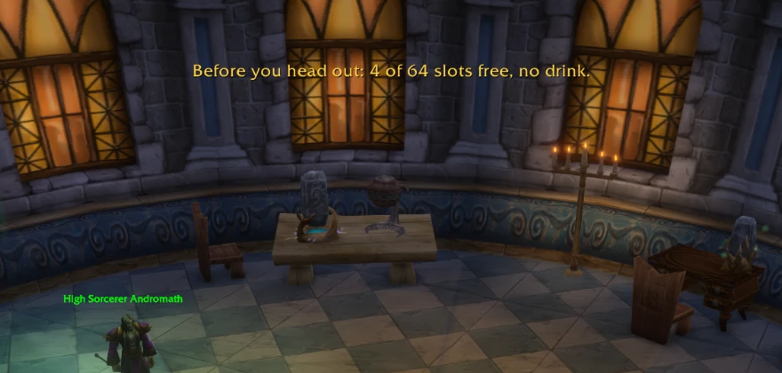
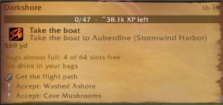

In a town, at an inn or right after a merchant, Questify checks you are ready to head out: fewer than 6 free bag slots (or under 20%), no food, no drink for mana classes, gear to repair.
Once per visit: a message in the middle of the screen, the details in the tracker and a line in the chat.
Stormwind, before the boat to Darkshore.

